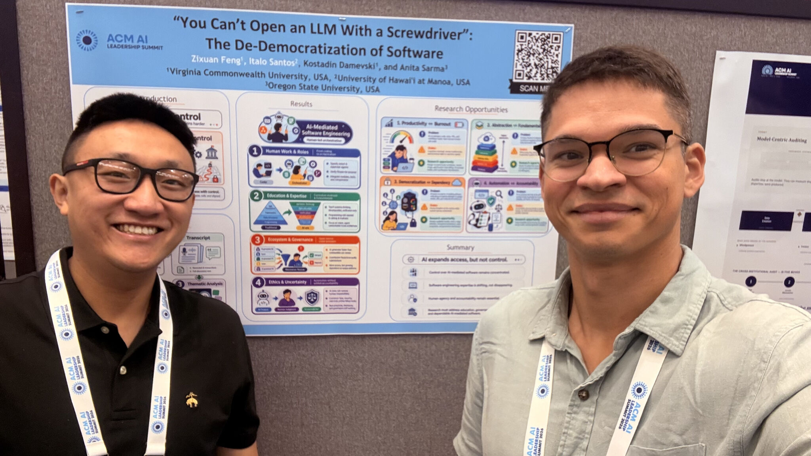

Presenting Our Work on the Future of Software Engineering at the ACM AI Leadership Summit

HERO Labs participated in the ACM AI Leadership Summit in Atlanta, an event that brought together AI leaders and experts from ACM Special Interest Groups around the world to discuss the current state and future direction of artificial intelligence.
A highlight of the summit was presenting our work with Zixuan (Steve) Feng: “You Can’t Open an LLM With a Screwdriver”: The De-Democratization of Software.
The paper examines an important tension in AI-assisted software development: artificial intelligence may democratize access to software creation without necessarily democratizing control. More people can now generate code, but responsibly inspecting, evaluating, integrating, maintaining, and governing AI-generated software still requires substantial software engineering expertise.
Our argument is that AI is not eliminating software engineering expertise. Instead, it is changing where that expertise matters. Software engineers are increasingly responsible for specifying intent, orchestrating AI behavior, evaluating generated outputs, integrating artifacts into larger systems, and maintaining accountability for the software that is ultimately deployed.
The work also explores tensions that may shape the next phase of software engineering, including productivity versus burnout, abstraction versus fundamental knowledge, democratization versus dependency, and automation versus accountability.
The summit reinforced a central idea behind HERO Labs: software engineering has an important role to play in translating increasingly powerful AI technologies into systems that are responsible, reliable, efficient, and designed to benefit people.